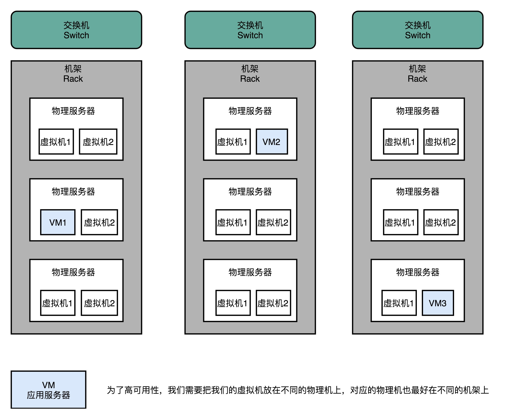

- 00 开篇词 为什么你需要学习计算机组成原理？.md.html
- 01 冯·诺依曼体系结构：计算机组成的金字塔.md.html
- 02 给你一张知识地图，计算机组成原理应该这么学.md.html
- 03 通过你的CPU主频，我们来谈谈“性能”究竟是什么？.md.html
- 04 穿越功耗墙，我们该从哪些方面提升“性能”？.md.html
- 05 计算机指令：让我们试试用纸带编程.md.html
- 06 指令跳转：原来if...else就是goto.md.html
- 07 函数调用：为什么会发生stack overflow？.md.html
- 08 ELF和静态链接：为什么程序无法同时在Linux和Windows下运行？.md.html
- 09 程序装载：“640K内存”真的不够用么？.md.html
- 10 动态链接：程序内部的“共享单车”.md.html
- 11 二进制编码：“手持两把锟斤拷，口中疾呼烫烫烫”？.md.html
- 12 理解电路：从电报机到门电路，我们如何做到“千里传信”？.md.html
- 13 加法器：如何像搭乐高一样搭电路（上）？.md.html
- 14 乘法器：如何像搭乐高一样搭电路（下）？.md.html
- 15 浮点数和定点数（上）：怎么用有限的Bit表示尽可能多的信息？.md.html
- 16 浮点数和定点数（下）：深入理解浮点数到底有什么用？.md.html
- 17 建立数据通路（上）：指令加运算=CPU.md.html
- 18 建立数据通路（中）：指令加运算=CPU.md.html
- 19 建立数据通路（下）：指令加运算=CPU.md.html
- 20 面向流水线的指令设计（上）：一心多用的现代CPU.md.html
- 21 面向流水线的指令设计（下）：奔腾4是怎么失败的？.md.html
- 22 冒险和预测（一）：hazard是“危”也是“机”.md.html
- 23 冒险和预测（二）：流水线里的接力赛.md.html
- 24 冒险和预测（三）：CPU里的“线程池”.md.html
- 25 冒险和预测（四）：今天下雨了，明天还会下雨么？.md.html
- 26 Superscalar和VLIW：如何让CPU的吞吐率超过1？.md.html
- 27 SIMD：如何加速矩阵乘法？.md.html
- 28 异常和中断：程序出错了怎么办？.md.html
- 29 CISC和RISC：为什么手机芯片都是ARM？.md.html
- 30 GPU（上）：为什么玩游戏需要使用GPU？.md.html
- 31 GPU（下）：为什么深度学习需要使用GPU？.md.html
- 32 FPGA、ASIC和TPU（上）：计算机体系结构的黄金时代.md.html
- 33 解读TPU：设计和拆解一块ASIC芯片.md.html
- 34 理解虚拟机：你在云上拿到的计算机是什么样的？.md.html
- 35 存储器层次结构全景：数据存储的大金字塔长什么样？.md.html
- 36 局部性原理：数据库性能跟不上，加个缓存就好了？.md.html
- 37 理解CPU Cache（上）：“4毫秒”究竟值多少钱？.md.html
- 38 高速缓存（下）：你确定你的数据更新了么？.md.html
- 39 MESI协议：如何让多核CPU的高速缓存保持一致？.md.html
- 40 理解内存（上）：虚拟内存和内存保护是什么？.md.html
- 41 理解内存（下）：解析TLB和内存保护.md.html
- 42 总线：计算机内部的高速公路.md.html
- 43 输入输出设备：我们并不是只能用灯泡显示“0”和“1”.md.html
- 44 理解IO_WAIT：IO性能到底是怎么回事儿？.md.html
- 45 机械硬盘：Google早期用过的“黑科技”.md.html
- 46 SSD硬盘（上）：如何完成性能优化的KPI？.md.html
- 47 SSD硬盘（下）：如何完成性能优化的KPI？.md.html
- 48 DMA：为什么Kafka这么快？.md.html
- 49 数据完整性（上）：硬件坏了怎么办？.md.html
- 50 数据完整性（下）：如何还原犯罪现场？.md.html
- 51 分布式计算：如果所有人的大脑都联网会怎样？.md.html
- 52 设计大型DMP系统（上）：MongoDB并不是什么灵丹妙药.md.html
- 53 设计大型DMP系统（下）：SSD拯救了所有的DBA.md.html
- 54 理解Disruptor（上）：带你体会CPU高速缓存的风驰电掣.md.html
- 55 理解Disruptor（下）：不需要换挡和踩刹车的CPU，有多快？.md.html
- 结束语 知也无涯，愿你也享受发现的乐趣.md.html
- 捐赠
51 分布式计算：如果所有人的大脑都联网会怎样？
今天是原理篇的最后一篇。过去 50 讲，我们一起看了抽象概念上的计算机指令，看了这些指令怎么拆解成一个个简单的电路，以及 CPU 是怎么通过一个一个的电路组成的。我们还一起看了高速缓存、内存、SSD 硬盘和机械硬盘，以及这些组件又是怎么通过总线和 CPU 连在一起相互通信的。
把计算机这一系列组件组合起来，我们就拿到了一台完整的计算机。现在我们每天在用的个人 PC、智能手机，乃至云上的服务器，都是这样一台计算机。
但是，一台计算机在数据中心里是不够的。因为如果只有一台计算机，我们会遇到三个核心问题。第一个核心问题，叫作垂直扩展和水平扩展的选择问题，第二问题叫作如何保持高可用性（High Availability），第三个问题叫作一致性问题（Consistency）。
围绕这三个问题，其实就是我们今天要讲的主题，分布式计算。当然，短短的一讲肯定讲不完这么大一个主题。分布式计算拿出来单开一门专栏也绰绰有余。我们今天这一讲的目标，是让你能理解水平扩展、高可用性这两个核心问题。对于分布式系统带来的一致性问题，我们会留在我们的实战篇里面，再用案例来为大家分析。
从硬件升级到水平扩展
从技术开发的角度来讲，想要在 2019 年创业真的很幸福。只要在 AWS 或者阿里云这样的云服务上注册一个账号，一个月花上一两百块钱，你就可以有一台在数据中心里面的服务器了。而且这台服务器，可以直接提供给世界各国人民访问。如果你想要做海外市场，你可以把这个服务器放在美国、欧洲、东南亚，任何一个你想要去的市场的数据中心里，然后把自己的网站部署在这台服务器里面就可以了。
现在在云服务商购买服务器的成本和方便程度都已经很高了
当然，这台服务器就是我们在第 34 讲里说的虚拟机。不过因为只是个业余时间的小项目，一开始这台服务器的配置也不会太高。我以我现在公司所用的 Google Cloud 为例。最低的配置差不多是 1 个 CPU 核心、3.75G 内存以及一块 10G 的 SSD 系统盘。这样一台服务器每个月的价格差不多是 28 美元。
幸运的是，你的网站很受大家欢迎，访问量也上来了。这个时候，这台单核心的服务器的性能有点不够用了。这个时候，你需要升级你的服务器。于是，你就会面临两个选择。
第一个选择是升级现在这台服务器的硬件，变成 2 个 CPU 核心、7.5G 内存。这样的选择我们称之为垂直扩展（Scale Up）。第二个选择则是我们再租用一台和之前一样的服务器。于是，我们有了 2 台 1 个 CPU 核心、3.75G 内存的服务器。这样的选择我们称之为水平扩展（Scale Out）。
在这个阶段，这两个选择，从成本上看起来没有什么差异。2 核心、7.5G 内存的服务器，成本是 56.61 美元，而 2 台 1 核心、3.75G 内存的服务器价格，成本是 57 美元，这之间的价格差异不到 1%。
不过，垂直扩展和水平扩展看似是两个不同的选择，但是随着流量不断增长。到最后，只会变成一个选择。那就是既会垂直扩展，又会水平扩展，并且最终依靠水平扩展，来支撑 Google、Facebook、阿里、腾讯这样体量的互联网服务。
垂直扩展背后的逻辑和优势都很简单。一般来说，垂直扩展通常不需要我们去改造程序，也就是说，我们没有研发成本。那为什么我们最终还是要用水平扩展呢？你可以先自己想一想。
原因其实很简单，因为我们没有办法不停地去做垂直扩展。我们在 Google Cloud 上现在能够买到的性能最好的服务器，是 96 个 CPU 核心、1.4TB 的内存。如果我们的访问量逐渐增大，一台 96 核心的服务器也支撑不了了，那么我们就没有办法再去做垂直扩展了。这个时候，我们就不得不采用水平扩展的方案了。
96 个 CPU 核心看起来是个很强大的服务器，但是你算一算就知道，其实它的计算资源并没有多大。你现在多半在用一台 4 核心，或者至少也是 2 核心的 CPU。96 个 CPU 也就是 30～50 台日常使用的开发机的计算性能。而我们今天在互联网上遇到的问题，是每天数亿的访问量，靠 30～50 台个人电脑的计算能力想要支撑这样的计算需求，可谓是天方夜谭了。
然而，一旦开始采用水平扩展，我们就会面临在软件层面改造的问题了。也就是我们需要开始进行分布式计算了。我们需要引入负载均衡（Load Balancer）这样的组件，来进行流量分配。我们需要拆分应用服务器和数据库服务器，来进行垂直功能的切分。我们也需要不同的应用之间通过消息队列，来进行异步任务的执行。

所有这些软件层面的改造，其实都是在做分布式计算的一个核心工作，就是通过消息传递（Message Passing）而不是共享内存（Shared Memory）的方式，让多台不同的计算机协作起来共同完成任务。
而因为我们最终必然要进行水平扩展，我们需要在系统设计的早期就基于消息传递而非共享内存来设计系统。即使这些消息只是在同一台服务器上进行传递。
事实上，有不少增长迅猛的公司，早期没有准备好通过水平扩展来支撑访问量的情况，而一味通过提升硬件配置 Scale Up，来支撑更大的访问量，最终影响了公司的存亡。最典型的例子，就是败在 Facebook 手下的MySpace。
理解高可用性和单点故障
尽管在 1 个 CPU 核心的服务器支撑不了我们的访问量的时候，选择垂直扩展是一个最简单的办法。不过如果是我的话，第一次扩展我会选择水平扩展。
选择水平扩展的一个很好的理由，自然是可以“强迫”从开发的角度，尽早地让系统能够支持水平扩展，避免在真的流量快速增长的时候，垂直扩展的解决方案跟不上趟。不过，其实还有一个更重要的理由，那就是系统的可用性问题。
上面的 1 核变 2 核的垂直扩展的方式，扩展完之后，我们还是只有 1 台服务器。如果这台服务器出现了一点硬件故障，比如，CPU 坏了，那我们的整个系统就坏了，就不可用了。
如果采用了水平扩展，即便有一台服务器的 CPU 坏了，我们还有另外一台服务器仍然能够提供服务。负载均衡能够通过健康检测（Health Check）发现坏掉的服务器没有响应了，就可以自动把所有的流量切换到第 2 台服务器上，这个操作就叫作故障转移（Failover），我们的系统仍然是可用的。
系统的可用性（Avaiability）指的就是，我们的系统可以正常服务的时间占比。无论是因为软硬件故障，还是需要对系统进行停机升级，都会让我们损失系统的可用性。可用性通常是用一个百分比的数字来表示，比如 99.99%。我们说，系统每个月的可用性要保障在 99.99%，也就是意味着一个月里，你的服务宕机的时间不能超过 4.32 分钟。
有些系统可用性的损失，是在我们计划内的。比如上面说的停机升级，这个就是所谓的计划内停机时间（Scheduled Downtime）。有些系统可用性的损失，是在我们计划外的，比如一台服务器的硬盘忽然坏了，这个就是所谓的计划外停机时间（Unscheduled Downtime）。
我们的系统是一定不可能做到 100% 可用的，特别是计划外的停机时间。从简单的硬件损坏，到机房停电、光缆被挖断，乃至于各种自然灾害，比如地震、洪水、海啸，都有可能使得我们的系统不可用。作为一个工程师和架构师，我们要做的就是尽可能低成本地提高系统的可用性。
咱们的专栏是要讲计算机组成原理，那我们先来看一看硬件服务器的可用性。
现在的服务器的可用性都已经很不错了，通常都能保障 99.99% 的可用性了。如果我们有一个小小的三台服务器组成的小系统，一台部署了 Nginx 来作为负载均衡和反向代理，一台跑了 PHP-FPM 作为 Web 应用服务器，一台用来作为 MySQL 数据库服务器。每台服务器的可用性都是 99.99%。那么我们整个系统的可用性是多少呢？你可以先想一想。
答案是 99.99% × 99.99% × 99.99% = 99.97%。在这个系统当中，这个数字看起来似乎没有那么大区别。不过反过来看，我们是从损失了 0.01% 的可用性，变成了损失 0.03% 的可用性，不可用的时间变成了原来的 3 倍。
如果我们有 1000 台服务器，那么整个的可用性，就会变成 99.99% ^ 1000 = 90.5%。也就是说，我们的服务一年里有超过一个月是不可用的。这可怎么办呀？

我们先来分析一下原因。之所以会出现这个问题，是因为在这个场景下，任何一台服务器出错了，整个系统就没法用了。这个问题就叫作单点故障问题（Single Point of Failure，SPOF）。我们这里的这个假设特别糟糕。我们假设这 1000 台服务器，每一个都存在单点故障问题。所以，我们的服务也就特别脆弱，随便哪台出现点风吹草动，整个服务就挂了。
要解决单点故障问题，第一点就是要移除单点。其实移除单点最典型的场景，在我们水平扩展应用服务器的时候就已经看到了，那就是让两台服务器提供相同的功能，然后通过负载均衡把流量分发到两台不同的服务器去。即使一台服务器挂了，还有一台服务器可以正常提供服务。
不过光用两台服务器是不够的，单点故障其实在数据中心里面无处不在。我们现在用的是云上的两台虚拟机。如果这两台虚拟机是托管在同一台物理机上的，那这台物理机本身又成为了一个单点。那我们就需要把这两台虚拟机分到两台不同的物理机上。
不过这个还是不够。如果这两台物理机在同一个机架（Rack）上，那机架上的交换机（Switch）就成了一个单点。即使放到不同的机架上，还是有可能出现整个数据中心遭遇意外故障的情况。

去年我自己就遇到过，部署在 Azure 上的服务所在的数据中心，因为散热问题触发了整个数据中心所有服务器被关闭的问题。面对这种情况，我们就需要设计进行异地多活的系统设计和部署。所以，在现代的云服务，你在买服务器的时候可以选择服务器的 area（地区）和 zone（区域），而要不要把服务器放在不同的地区或者区域里，也是避免单点故障的一个重要因素。
只是能够去除单点，其实我们的可用性问题还没有解决。比如，上面我们用负载均衡把流量均匀地分发到 2 台服务器上，当一台应用服务器挂掉的时候，我们的确还有一台服务器在提供服务。但是负载均衡会把一半的流量发到已经挂掉的服务器上，所以这个时候只能算作一半可用。
想要让整个服务完全可用，我们就需要有一套故障转移（Failover）机制。想要进行故障转移，就首先要能发现故障。
以我们这里的 PHP-FPM 的 Web 应用为例，负载均衡通常会定时去请求一个 Web 应用提供的健康检测（Health Check）的地址。这个时间间隔可能是 5 秒钟，如果连续 2～3 次发现健康检测失败，负载均衡就会自动将这台服务器的流量切换到其他服务器上。于是，我们就自动地产生了一次故障转移。故障转移的自动化在大型系统里是很重要的，因为服务器越多，出现故障基本就是个必然发生的事情。而自动化的故障转移既能够减少运维的人手需求，也能够缩短从故障发现到问题解决的时间周期，提高可用性。

我们在 Web 应用上设置了一个 Heartbeat 接口，每 20 秒检查一次，出现问题的时候可以进行故障转移切换
那么，让我们算一算，通过水平扩展相同功能的服务器来去掉单点故障，并且通过健康检查机制来触发自动的故障转移，这样的可用性会变成多少呢？你可以拿出纸和笔来试一下。
不知道你想明白应该怎么算了没有，在这种情况下，我们其实只要有任何一台服务器能够正常运转，就能正常提供服务。那么，我们的可用性就是：
100% - (100% - 99.99%) × (100% - 99.99%) = 99.999999%
可以看出，不能提供服务的时间就减少到了原来的万分之一。
当然，在实际情况中，可用性没法做到那么理想的地步。光从硬件的角度，从服务器到交换机，从网线连接到机房电力，从机房的整体散热到外部的光纤线路等等，可能出现问题的地方太多了。这也是为什么，我们需要从整个系统层面，去设计系统的高可用性。
总结延伸
讲到这里，相信你已经很清楚，为什么我们需要水平扩展了。对于怎么去设计整个硬件的部署，来保障高可用性，你应该也有了一个清晰的认识。这两点也是分布式计算在实践中非常重要的应用场景。
不过，光有这两点还是不够的。一旦系统里面有了很多台服务器。特别是，为了保障可用性，对于同样功能的、有状态的数据库进行了水平的扩展，我们就会面临一个新的挑战，那就是分区一致性问题。不过，这个问题更多的是一个软件设计问题，我把它留在后面的实战篇再进行讲解。
我们下面来回顾一下这一讲的内容。我们讲了通过升级硬件规格来提升服务能力的垂直扩展。除此之外，也可以通过增加服务器数量来提升服务能力。不过归根到底，我们一定要走上水平扩展的路径。
一方面是因为垂直扩展不可持续；另一方面，则是只有水平扩展才能保障高可用性。而通过水平扩展保障高可用性，则需要我们做三件事情。第一个是理解可用性是怎么计算的。服务器硬件的损坏只是可能导致可用性损失的因素之一，机房内的电力、散热、交换机、网络线路，都有可能导致可用性损失。而外部的光缆、自然灾害，也都有可能造成我们整个系统的不可用。
所以，在分析设计系统的时候，我们需要尽可能地排除单点故障。进一步地，对于硬件的故障，我们还要有自动化的故障转移策略。在这些策略都齐全之后，我们才能真的长舒一口气，在海量的负载和流量下安心睡个好觉。
推荐阅读
今天的推荐阅读，不是读一篇具体的文章，我推荐你可以常常去浏览一下http://highscalability.com/这个网站，里面有不少有价值的、讲解怎么做到高扩展性的小文章。
© 2019 - 2023 Liangliang Lee. Powered by gin and hexo-theme-book.